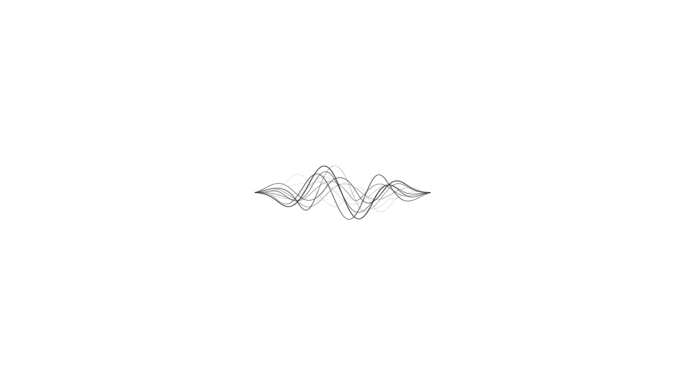
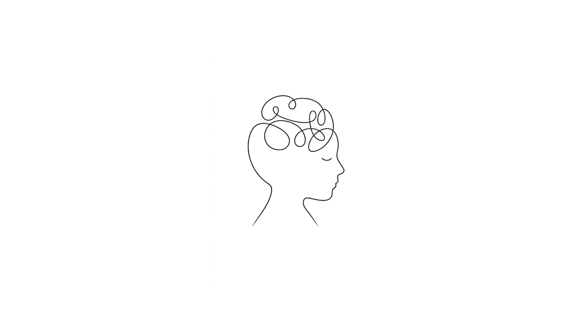

İşitme, kulakta başlayıp beyinde tamamlanan bir süreçtir. Bu site, odyoloji ve işitsel nörobilimin kesişiminde durarak, işitme kaybıyla yaşayan bireylere ve ailelerine bilimsel temelli, anlaşılır bir rehberlik sunmayı amaçlıyor.

İrem YemenicilerHer bireyin işitme deneyimi farklıdır — bu yüzden her açıklama, dinleyenin sorusuna göre şekillenmeli.
Değerlendirmeden ameliyat sonrasına kadar sürecin genel hatları — kimler adaydır, neler beklenir.
Devamını oku →
Odyoloji lisansımı Başkent Üniversitesi'nde, nörobilim yüksek lisansımı İstanbul Medipol Üniversitesi'nde tamamladım. Bu site, klinik deneyimimi ve bilimsel bakış açımı bir araya getirdiğim kişisel bir alan.
Hakkımda daha fazlası →